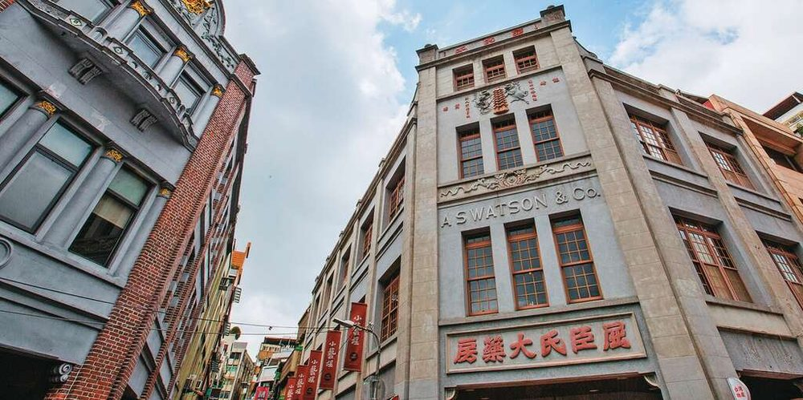

CH1
Dadaocheng: Taipei's Old Tea Town
Dadaocheng was once the beating heart of Taiwan's global tea trade and the birthplace of the 1920s movement for democracy and cultural enlightenment. Its beautifully preserved shophouses, century-old temple, and riverside sunset make it one of Taipei's most atmospheric old quarters.
Route: Dadaoqiantou Station → Taiwan New Cultural Movement Memorial Hall → Dihua Street → Xiahai City God Temple → Dadaocheng Wharf (sunset) → Pier-5 Container Market (dinner)
Note: this route includes a stop at a non-Christian religious site.